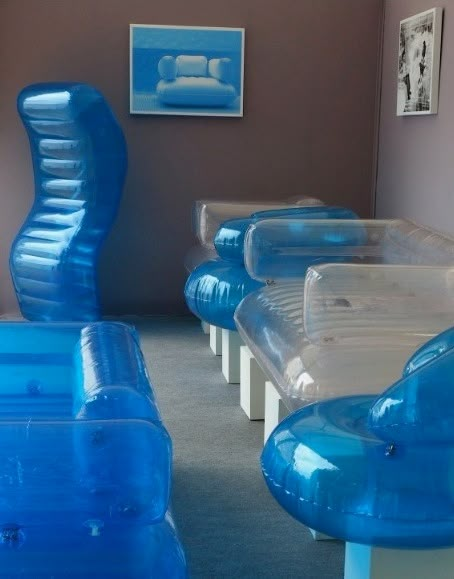
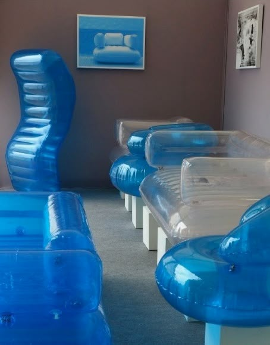
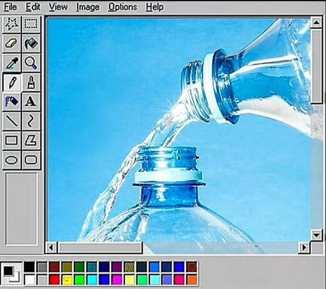
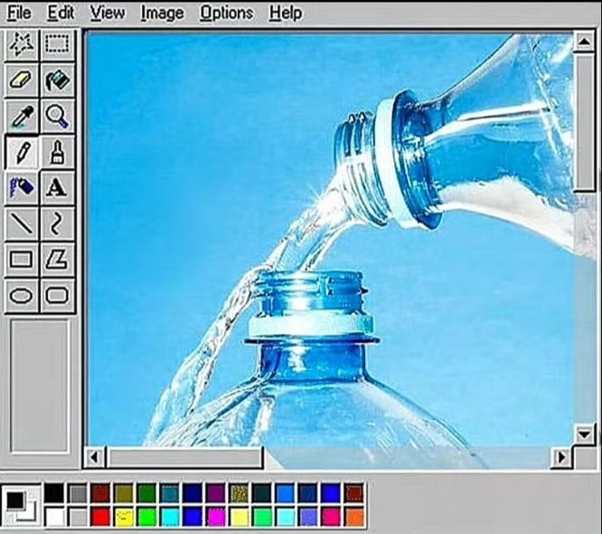

A visual design trend from the mid-2000s characterized by glossy surfaces, vibrant colors, and futuristic elements.
- Glossy, reflective surfaces
- 3D icons and elements
- Water reflections and bubbles
- Vibrant turquoise and green colors
- Skies, clouds and water backgrounds
2004-2013 was the golden age of Frutiger Aero, appearing in operating systems, product design, and advertising.
Frutiger Aero shaped digital aesthetics of the late 2000s, influencing UI design and branding.
 

 
